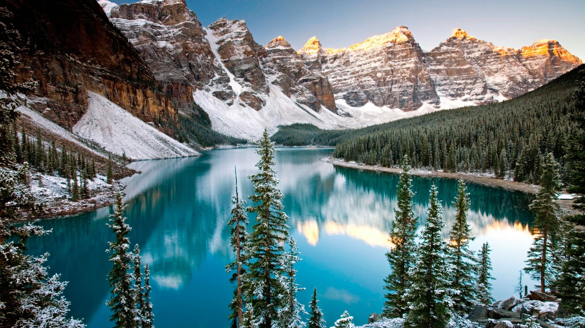
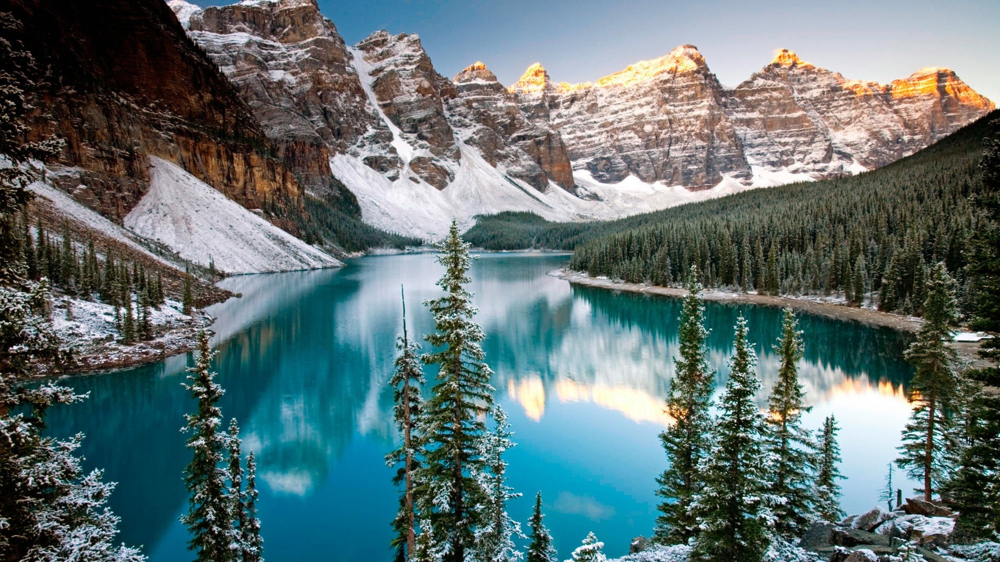

Conhecimento sobre o inverno

Conhecimento sobre o inverno
O inverno é uma das quatro estações do ano e se caracteriza pelas temperaturas mais baixas, dias mais curtos e noites mais longas. Em muitas regiões, é comum a presença de geadas, neblinas e, em alguns lugares, até neve. É uma época em que as pessoas costumam se agasalhar mais, buscar bebidas quentes e aproveitar momentos aconchegantes em casa. A paisagem no inverno pode mudar drasticamente. Árvores perdem suas folhas em certas regiões, e o ar se torna mais seco. Apesar do frio, o inverno também tem seu charme: é tempo de festas tradicionais, como as festas juninas no Brasil, e de aproveitar comidas típicas como caldos, sopas e chocolates quentes. Além disso, o inverno convida à reflexão e ao recolhimento. Muitas pessoas sentem uma necessidade maior de descanso, de introspecção, e isso pode ser uma oportunidade para renovar energias antes da chegada da primavera.
Essa são fotos tiradas do inverno deslumbrnate do Canadá com suas florestas e rios congelados: